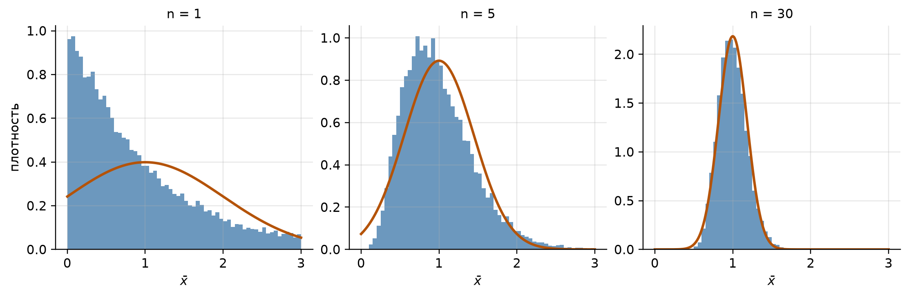
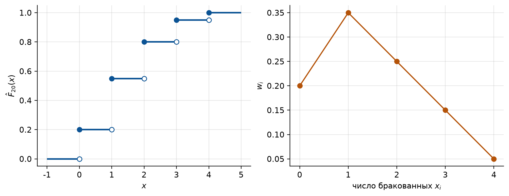
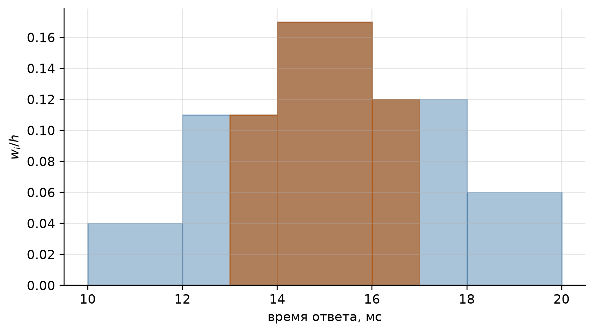

import numpy as np
import matplotlib.pyplot as plt
from math import ceil, erf, sqrt
# Оформление графиков: шрифт с кириллицей и палитра, различимая при печати
PALETTE = ["#0b5394", "#b45309", "#2e7d32", "#7b1fa2", "#c62828", "#00838f"]
plt.rcParams.update({
"font.family": "sans-serif",
"font.sans-serif": ["DejaVu Sans", "Liberation Sans", "Noto Sans", "sans-serif"],
"axes.unicode_minus": False,
"axes.prop_cycle": plt.cycler(color=PALETTE),
"axes.spines.top": False,
"axes.spines.right": False,
"axes.grid": True,
"grid.alpha": 0.3,
"figure.dpi": 110,
"figure.constrained_layout.use": True,
})
# Генератор случайных чисел с фиксированным зерном: результаты воспроизводимы
rng = np.random.default_rng(2026)
def norm_cdf(t):
"""Функция распределения стандартного нормального закона, Phi(t) = P(Z <= t)."""
return 0.5 * (1 + erf(t / sqrt(2)))
def norm_pdf(t, mu=0.0, sigma=1.0):
"""Плотность нормального закона N(mu, sigma^2); t может быть массивом."""
return np.exp(-((t - mu) ** 2) / (2 * sigma**2)) / (sigma * np.sqrt(2 * np.pi))
def freq_table(sample):
"""Статистический ряд: варианты x_i, частоты n_i и относительные частоты w_i."""
values, counts = np.unique(np.asarray(sample), return_counts=True)
return values, counts, counts / counts.sum()
def ecdf(sample, x):
"""Эмпирическая функция распределения: доля элементов выборки, не больших x."""
sample = np.asarray(sample)
return np.mean(sample <= x)
def grouped_stats(mids, counts):
"""Среднее, дисперсия с делителем n и s^2 с делителем n - 1 по сгруппированным данным.
mids: середины интервалов, counts: частоты интервалов.
"""
mids, counts = np.asarray(mids, dtype=float), np.asarray(counts)
n = counts.sum()
mean = (mids * counts).sum() / n
var = ((mids - mean) ** 2 * counts).sum() / n
return mean, var, var * n / (n - 1)
def compare(name, a, b, labels=("формула", "расчёт")):
"""Печатает два значения одной величины рядом, с подписями labels."""
print(f"{name:>16}: {labels[0]} {a:10.4f} {labels[1]} {b:10.4f}")7 Семинар 8. Закон больших чисел и ЦПТ. Выборка и её описание
Теория вероятностей и математическая статистика · НИЯУ МИФИ
Скачать PDF-раздатку этого семинара
7.1 Код для этой главы
Все импорты и функции, которые используются в примерах главы, собраны в одной ячейке. Выполните её первой: остальные ячейки опираются на неё.
7.2 Краткая сводка
Теория вероятностей позади: по известному закону мы считали вероятности и средние. Статистика решает обратную задачу: закон неизвестен, есть только наблюдения, и по ним надо судить о законе. Мостом служат две предельные теоремы. Здесь они только формулируются; работать с ними будем на следующих семинарах.
Уведомление
Обозначения. В главе используются стандартные обозначения. В задачнике Гмурмана то же самое записано иначе:
| Здесь | Гмурман |
|---|---|
| \(\bar x\), выборочное среднее | \(\bar x_в\) |
| \(\hat\sigma^2 = \frac1n\sum (x_i - \bar x)^2\) | \(D_в\) |
| \(s^2 = \frac{1}{n-1}\sum (x_i - \bar x)^2\) | \(s^2\) |
| \(\hat F_n(x)\), эмпирическая функция распределения | \(F^*(x)\) |
| \(w_i = n_i / n\) | \(W_i\) |
| \(\E X\), \(\Var X\) | \(M(X)\), \(D(X)\) |
| \(\Phi(t) = \Prob(Z \leqslant t)\), \(Z \sim N(0, 1)\) | \(\Phi(t) - 0{,}5\) |
7.2.1 От вероятности к статистике
Пусть \(X_1, \dots, X_n\) независимы и одинаково распределены: \[ X_1, \dots, X_n \sim F, \qquad X_i \indep X_j \ (i \ne j), \] где \(F\) есть какая угодно функция распределения (дискретная, непрерывная, несимметричная). Раз закон у всех \(X_i\) один и тот же, у них одни и те же среднее и дисперсия: \[ \E X_i = \mu, \qquad \Var X_i = \sigma^2 \qquad \text{для всех } i = 1, \dots, n \] (предполагаем, что они существуют и \(0 < \sigma^2 < \infty\)). Обозначим \(S_n = X_1 + \dots + X_n\) и \(\bar X_n = S_n / n\). По свойствам среднего и дисперсии (для дисперсии нужна независимость) \[ \E S_n = n\mu, \quad \Var S_n = n\sigma^2, \qquad \E \bar X_n = \mu, \quad \Var \bar X_n = \frac{\sigma^2}{n}. \]
Неравенство Чебышева. Для любой величины \(X\) с конечной дисперсией и любого \(\varepsilon > 0\) \[ \Prob(|X - \E X| \geqslant \varepsilon) \leqslant \frac{\Var X}{\varepsilon^2}. \]
Закон больших чисел. Применяя неравенство к \(\bar X_n\): \(\Prob(|\bar X_n - \mu| \geqslant \varepsilon) \leqslant \dfrac{\sigma^2}{n\varepsilon^2} \to 0\). Среднее многих наблюдений приближается к \(\mu\). Частный случай (теорема Бернулли): относительная частота события в \(n\) испытаниях приближается к его вероятности \(p\).
Центральная предельная теорема. Стандартизуем сумму: вычтем её среднее и разделим на стандартное отклонение. Тогда при любом \(F\) с конечной дисперсией для каждого \(t\) \[ \Prob\Big(\frac{S_n - n\mu}{\sigma\sqrt n} \leqslant t\Big) = \Prob\Big(\frac{\bar X_n - \mu}{\sigma / \sqrt n} \leqslant t\Big) \xrightarrow[n \to \infty]{} \Phi(t). \] От закона \(F\) в ответе остались только два числа, \(\mu\) и \(\sigma\): форма \(F\) при больших \(n\) забывается. На практике теорему применяют в виде приближения \[ S_n \approx N(n\mu,\ n\sigma^2), \qquad \bar X_n \approx N\Big(\mu,\ \frac{\sigma^2}{n}\Big). \]
Пример. Бросают 100 игральных костей, \(X_i\) есть очко на \(i\)-й. Закон \(X_i\) равномерный на \(\{1, \dots, 6\}\), совсем не нормальный, но \(\mu = 3{,}5\), \(\sigma^2 = \frac{91}{6} - 3{,}5^2 = \frac{35}{12}\) одни и те же у всех костей. Для суммы очков \(\E S_{100} = 350\), \(\Var S_{100} = \frac{3500}{12} \approx 291{,}7\), \(\sigma(S_{100}) \approx 17{,}08\), и по ЦПТ \[ \Prob(330 \leqslant S_{100} \leqslant 370) \approx \Phi\Big(\frac{20}{17{,}08}\Big) - \Phi\Big(-\frac{20}{17{,}08}\Big) = 2\Phi(1{,}17) - 1 \approx 0{,}758. \] Точное значение 0,770; разница в основном из-за того, что сумма целочисленна (если взять границы \(329{,}5\) и \(370{,}5\), получится 0,770).
Частный случай: \(X_i\) принимает значения 1 и 0 с вероятностями \(p\) и \(q = 1 - p\) (успех в \(i\)-м испытании Бернулли). Тогда \(\mu = p\), \(\sigma^2 = pq\), \(S_n = k\) есть число успехов, и ЦПТ превращается в интегральную теорему Муавра–Лапласа: \(\Prob(a \leqslant k \leqslant b) \approx \Phi\big(\frac{b - np}{\sqrt{npq}}\big) - \Phi\big(\frac{a - np}{\sqrt{npq}}\big)\).
Что из этого берёт статистика:
- выборочное среднее \(\bar x\) годится как приближение для \(\mu\) (закон больших чисел);
- его ошибка имеет порядок \(\sigma/\sqrt n\) и приближённо нормальна (ЦПТ): чтобы уменьшить ошибку вдвое, наблюдений нужно вчетверо больше;
- по той же причине эмпирическая функция распределения \(\hat F_n(x)\) при больших \(n\) близка к истинной \(F(x)\) (теорема Гливенко).
УведомлениеПрочитайте за вечер: «Как лгать при помощи статистики»
С этого семинара начинается статистика, а с ней и умение не верить цифрам на слово. Классическая книжка Даррелла Хаффа (1954, есть русский перевод) показывает, как честными цифрами вводят в заблуждение: выборка не из той совокупности, «среднее» вместо медианы, группа из 12 человек, обрезанная ось графика, корреляция вместо причины. Формул там нет, а каждый приём ловится тем, что мы прошли в этом семестре.
Краткий пересказ с примерами на Python в приложении к книге.
Проверка примера с костями: точный закон суммы 100 костей (свёртка 100 одинаковых равномерных рядов) против приближения ЦПТ.
die = np.ones(6) / 6
law = np.array([1.0])
for _ in range(100):
law = np.convolve(law, die)
sums = np.arange(100, 601)
exact = law[(sums >= 330) & (sums <= 370)].sum()
sd = sqrt(100 * 35 / 12)
compare("P(330<=S<=370)", 2 * norm_cdf(20 / sd) - 1, exact, ("ЦПТ", "точно"))
compare("с поправкой 0,5", 2 * norm_cdf(20.5 / sd) - 1, exact, ("ЦПТ", "точно")) P(330<=S<=370): ЦПТ 0.7584 точно 0.7697
с поправкой 0,5: ЦПТ 0.7700 точно 0.7697fig, axes = plt.subplots(1, 3, figsize=(10, 3.2))
for ax, n_obs in zip(axes, [1, 5, 30]):
means = rng.exponential(1.0, size=(20_000, n_obs)).mean(axis=1)
ax.hist(means, bins=60, range=(0, 3), density=True, color=PALETTE[0], alpha=0.6)
grid = np.linspace(0, 3, 300)
ax.plot(grid, norm_pdf(grid, 1.0, 1.0 / sqrt(n_obs)), color=PALETTE[1], lw=2)
ax.set_title(f"n = {n_obs}", fontsize=10)
ax.set_xlabel("$\\bar x$")
axes[0].set_ylabel("плотность")
plt.show()
7.2.2 Выборка и её распределение
Генеральная совокупность есть случайная величина \(X\) с неизвестным законом. Выборка объёма \(n\): значения \(x_1, \dots, x_n\), полученные в \(n\) независимых наблюдениях \(X\).
- Вариационный ряд: выборка, упорядоченная по возрастанию, \(x_{(1)} \leqslant \dots \leqslant x_{(n)}\).
- Статистический ряд: различные значения (варианты) \(x_i\), их частоты \(n_i\) (\(\sum n_i = n\)) и относительные частоты \(w_i = n_i/n\) (\(\sum w_i = 1\)). Это выборочный аналог ряда распределения.
- Эмпирическая функция распределения: \[ \hat F_n(x) = \frac{\text{число } x_i \leqslant x}{n}. \] Ступенчатая, от 0 до 1, в каждой варианте \(x_i\) прыгает на \(w_i\). Выборочный аналог \(F(x)\).
- Полигон частот: ломаная через точки \((x_i, w_i)\). Для дискретных данных.
- Группировка и гистограмма. Непрерывные данные разбивают на интервалы длины \(h\), \(n_i\) есть число наблюдений в \(i\)-м интервале. Над интервалом строят прямоугольник высотой \(\dfrac{w_i}{h} = \dfrac{n_i}{nh}\). Площадь всей гистограммы равна 1, гистограмма есть выборочный аналог плотности \(f(x)\).
7.2.3 Числовые характеристики выборки
| Выборочная | Формула | Аналог |
|---|---|---|
| среднее | \(\bar x = \frac1n\sum x_i = \sum x_i w_i\) | \(\E X\) |
| дисперсия | \(\hat\sigma^2 = \frac1n\sum (x_i - \bar x)^2 = \overline{x^2} - \bar x^2\) | \(\Var X\) |
| исправленная дисперсия | \(s^2 = \frac{n}{n - 1}\,\hat\sigma^2\) | \(\Var X\) |
| медиана | средний элемент вариационного ряда (при чётном \(n\) полусумма двух средних) | медиана \(X\) |
| мода | варианта с наибольшей частотой | мода \(X\) |
| размах | \(x_{(n)} - x_{(1)}\) |
Для сгруппированных данных \(x_i\) в формулах заменяют серединами интервалов. Почему у \(s^2\) делитель \(n - 1\) и какая из двух дисперсий «правильная», разберём на следующем семинаре.
Линейная замена. Если \(y_i = a + b x_i\), то \(\bar y = a + b\bar x\), \(\hat\sigma^2_y = b^2\hat\sigma^2_x\) (то же для \(s^2\)). Удобно для расчётов вручную: середины интервалов заменяют на \(u_i = (x_i - C)/h\), где \(C\) есть середина в центре таблицы, а \(h\) есть шаг. Тогда \(u_i\) будут целыми числами \(\dots, -1, 0, 1, \dots\), и \(\bar x = C + h\bar u\), \(\hat\sigma^2_x = h^2\hat\sigma^2_u\).
7.3 Блок A. Закон больших чисел и ЦПТ
7.3.1 Задача 1
Прибор измеряет величину \(\mu\) со случайной ошибкой: среднее ошибки 0, стандартное отклонение \(\sigma = 0{,}2\). Результатом считают среднее \(\bar X\) из \(n\) независимых измерений. Сколько нужно измерений, чтобы \(|\bar X - \mu| < 0{,}05\) с вероятностью не меньше 0,95?
а) Ответить с помощью ЦПТ. б) Ответить с помощью неравенства Чебышева (оно не требует знать закон ошибки). Сравнить.
СоветРешение
\(\E\bar X = \mu\), \(\sigma(\bar X) = \sigma/\sqrt n = 0{,}2/\sqrt n\).
а) ЦПТ. \(\bar X \approx N(\mu, \sigma^2/n)\), поэтому \[ \Prob(|\bar X - \mu| < 0{,}05) \approx 2\Phi\Big(\frac{0{,}05\sqrt n}{0{,}2}\Big) - 1 \geqslant 0{,}95 \iff \Phi\Big(\frac{\sqrt n}{4}\Big) \geqslant 0{,}975 \iff \frac{\sqrt n}{4} \geqslant 1{,}96. \] Отсюда \(n \geqslant (4 \cdot 1{,}96)^2 = 61{,}47\), то есть \(n = 62\).
б) Чебышев. \(\Prob(|\bar X - \mu| \geqslant 0{,}05) \leqslant \dfrac{0{,}04}{n \cdot 0{,}0025} = \dfrac{16}{n} \leqslant 0{,}05\), откуда \(n \geqslant 320\).
Сравнение. Неравенство Чебышева гарантирует результат при любом законе ошибки, поэтому оно осторожно и требует впятеро больше измерений. ЦПТ даёт приближённый, но гораздо более точный ответ: на практике берут его.
Проверка: ошибки берём равномерными (не нормальными) с \(\sigma = 0{,}2\), то есть на \((-0{,}2\sqrt3;\ 0{,}2\sqrt3)\); при \(n = 62\) доля серий с \(|\bar X - \mu| < 0{,}05\) должна быть около 0,95.
sigma, eps = 0.2, 0.05
n_clt = ceil((1.96 * sigma / eps) ** 2)
n_cheb = ceil(sigma**2 / (eps**2 * 0.05))
print(f"ЦПТ: n = {n_clt}, Чебышев: n = {n_cheb}")
half = sigma * sqrt(3)
errors = rng.uniform(-half, half, size=(100_000, n_clt))
hit = np.mean(np.abs(errors.mean(axis=1)) < eps)
compare("P(|ошибка|<0,05)", 2 * norm_cdf(eps * sqrt(n_clt) / sigma) - 1, hit, ("ЦПТ", "симуляция"))ЦПТ: n = 62, Чебышев: n = 320
P(|ошибка|<0,05): ЦПТ 0.9510 симуляция 0.9510
ПредупреждениеТипичная ошибка
Подставлять в ЦПТ \(\sigma\) вместо \(\sigma/\sqrt n\): тогда \(n\) из ответа пропадает, и кажется, что повторные измерения не помогают.
7.4 Блок B. Выборка и её распределение
7.4.1 Задача 2
Проверено 20 партий изделий; число бракованных изделий в партиях:
\[ 2,\ 1,\ 0,\ 3,\ 1,\ 1,\ 2,\ 4,\ 0,\ 1,\ 2,\ 3,\ 1,\ 0,\ 2,\ 1,\ 3,\ 0,\ 1,\ 2. \]
а) Записать вариационный ряд и статистический ряд (частоты и относительные частоты). б) Найти эмпирическую функцию распределения \(\hat F_{20}(x)\) и построить её график. в) Построить полигон относительных частот. г) По \(\hat F_{20}\) найти долю партий, в которых бракованных изделий не больше двух, и долю, в которых их больше одного.
СоветРешение
а) Вариационный ряд: \(0, 0, 0, 0, 1, 1, 1, 1, 1, 1, 1, 2, 2, 2, 2, 2, 3, 3, 3, 4\).
| \(x_i\) | 0 | 1 | 2 | 3 | 4 |
|---|---|---|---|---|---|
| \(n_i\) | 4 | 7 | 5 | 3 | 1 |
| \(w_i\) | 0,20 | 0,35 | 0,25 | 0,15 | 0,05 |
Контроль: \(\sum n_i = 20\), \(\sum w_i = 1\).
б) Накапливаем относительные частоты: \[ \hat F_{20}(x) = \begin{cases} 0, & x < 0,\\ 0{,}20, & 0 \leqslant x < 1,\\ 0{,}55, & 1 \leqslant x < 2,\\ 0{,}80, & 2 \leqslant x < 3,\\ 0{,}95, & 3 \leqslant x < 4,\\ 1, & x \geqslant 4. \end{cases} \]
в) Полигон: ломаная через точки \((0;\ 0{,}20)\), \((1;\ 0{,}35)\), \((2;\ 0{,}25)\), \((3;\ 0{,}15)\), \((4;\ 0{,}05)\). Оба графика ниже.
г) Не больше двух: \(\hat F_{20}(2) = 0{,}80\). Больше одного: \(1 - \hat F_{20}(1) = 1 - 0{,}55 = 0{,}45\).
Проверка: ряд и значения \(\hat F_{20}\) по самой выборке.
defects = [2, 1, 0, 3, 1, 1, 2, 4, 0, 1, 2, 3, 1, 0, 2, 1, 3, 0, 1, 2]
values, counts, freqs = freq_table(defects)
print("x_i:", values, " n_i:", counts, " w_i:", freqs)
print("F(x) в вариантах:", [ecdf(defects, v) for v in values])
compare("доля <= 2", 0.80, ecdf(defects, 2))
compare("доля > 1", 0.45, 1 - ecdf(defects, 1))x_i: [0 1 2 3 4] n_i: [4 7 5 3 1] w_i: [0.2 0.35 0.25 0.15 0.05]
F(x) в вариантах: [np.float64(0.2), np.float64(0.55), np.float64(0.8), np.float64(0.95), np.float64(1.0)]
доля <= 2: формула 0.8000 расчёт 0.8000
доля > 1: формула 0.4500 расчёт 0.4500fig, (ax1, ax2) = plt.subplots(1, 2, figsize=(9, 3.4))
levels = np.cumsum(freqs)
edges = np.concatenate([[-1], values, [5]])
heights = np.concatenate([[0], levels])
for left, right, h in zip(edges[:-1], edges[1:], heights):
ax1.hlines(h, left, right, color=PALETTE[0], lw=2)
ax1.plot(values, levels, "o", color=PALETTE[0])
ax1.plot(values, heights[:-1], "o", mfc="white", color=PALETTE[0])
ax1.set_xlabel("$x$")
ax1.set_ylabel("$\\hat F_{20}(x)$")
ax2.plot(values, freqs, "o-", color=PALETTE[1])
ax2.set_xlabel("число бракованных $x_i$")
ax2.set_ylabel("$w_i$")
ax2.set_xticks(values)
plt.show()
ПредупреждениеТипичная ошибка
Путать значение в точке скачка: \(\hat F_{20}(1) = 0{,}55\), а не \(0{,}20\), потому что партии ровно с одним браком тоже считаются. Для доли «больше одного» вычитают \(\hat F_{20}(1)\), а не \(\hat F_{20}(2)\).
7.4.2 Задача 3
Измерено время ответа сервера (мс) на 50 запросов. Результаты сгруппированы:
| Время, мс | \([10, 12)\) | \([12, 14)\) | \([14, 16)\) | \([16, 18)\) | \([18, 20)\) |
|---|---|---|---|---|---|
| Число запросов \(n_i\) | 4 | 11 | 17 | 12 | 6 |
а) Построить гистограмму относительных частот и проверить, что её площадь равна 1. б) Найти долю запросов со временем от 14 до 18 мс. в) Оценить по гистограмме долю запросов со временем от 13 до 17 мс. г) Найти значения \(\hat F_{50}\) на границах интервалов.
СоветРешение
а) \(n = 50\), \(h = 2\). Высоты \(w_i / h\):
| Интервал | \([10, 12)\) | \([12, 14)\) | \([14, 16)\) | \([16, 18)\) | \([18, 20)\) |
|---|---|---|---|---|---|
| \(w_i\) | 0,08 | 0,22 | 0,34 | 0,24 | 0,12 |
| \(w_i / h\) | 0,04 | 0,11 | 0,17 | 0,12 | 0,06 |
Площадь: \(2\cdot(0{,}04 + 0{,}11 + 0{,}17 + 0{,}12 + 0{,}06) = 2\cdot 0{,}5 = 1\).
б) Интервалы \([14, 16)\) и \([16, 18)\) целиком: \(0{,}34 + 0{,}24 = 0{,}58\). Это точный ответ по выборке.
в) Отрезок \([13, 17)\) захватывает половину интервала \([12, 14)\), весь \([14, 16)\) и половину \([16, 18)\). Площадь гистограммы над ним: \(1\cdot 0{,}11 + 2\cdot 0{,}17 + 1\cdot 0{,}12 = 0{,}57\). Это оценка: внутри интервала мы не знаем, где лежат наблюдения, и считаем их распределёнными равномерно.
г) Накопленные частоты: \(\hat F_{50}(12) = 0{,}08\), \(\hat F_{50}(14) = 0{,}30\), \(\hat F_{50}(16) = 0{,}64\), \(\hat F_{50}(18) = 0{,}88\), \(\hat F_{50}(20) = 1\) (левее 10 значение 0). Ответ б) через них: \(\hat F_{50}(18) - \hat F_{50}(14) = 0{,}58\).
Проверка: высоты, площадь и обе доли.
edges3 = np.array([10, 12, 14, 16, 18, 20])
counts3 = np.array([4, 11, 17, 12, 6])
h = 2
dens = counts3 / counts3.sum() / h
print("высоты w_i/h:", dens, " площадь:", (dens * h).sum())
print("F на правых границах:", np.cumsum(counts3) / counts3.sum())
compare("доля [14, 18)", 0.58, (counts3[2] + counts3[3]) / 50)
compare("доля [13, 17)", 0.57, 1 * dens[1] + 2 * dens[2] + 1 * dens[3])высоты w_i/h: [0.04 0.11 0.17 0.12 0.06] площадь: 1.0
F на правых границах: [0.08 0.3 0.64 0.88 1. ]
доля [14, 18): формула 0.5800 расчёт 0.5800
доля [13, 17): формула 0.5700 расчёт 0.5700fig, ax = plt.subplots(figsize=(6.5, 3.6))
ax.bar(edges3[:-1], dens, width=h, align="edge", color=PALETTE[0], alpha=0.35, edgecolor=PALETTE[0])
ax.fill_between([13, 14], 0, dens[1], color=PALETTE[1], alpha=0.6)
ax.fill_between([14, 16], 0, dens[2], color=PALETTE[1], alpha=0.6)
ax.fill_between([16, 17], 0, dens[3], color=PALETTE[1], alpha=0.6)
ax.set_xlabel("время ответа, мс")
ax.set_ylabel("$w_i / h$")
ax.set_xticks(edges3)
plt.show()
ПредупреждениеТипичная ошибка
Откладывать по вертикали \(n_i\) или \(w_i\) вместо \(w_i/h\). При равных интервалах форма не меняется, но площадь уже не равна 1, и долю нельзя считать как площадь. При неравных интервалах неверной становится и форма.
7.5 Блок C. Числовые характеристики выборки
7.5.1 Задача 4
Для выборки из задачи 2 найти выборочное среднее \(\bar x\), дисперсии \(\hat\sigma^2\) и \(s^2\), медиану, моду и размах.
СоветРешение
По статистическому ряду: \[ \bar x = \frac{0\cdot4 + 1\cdot7 + 2\cdot5 + 3\cdot3 + 4\cdot1}{20} = \frac{30}{20} = 1{,}5, \qquad \overline{x^2} = \frac{0 + 7 + 20 + 27 + 16}{20} = \frac{70}{20} = 3{,}5. \] \(\hat\sigma^2 = 3{,}5 - 1{,}5^2 = 1{,}25\), \(s^2 = \frac{20}{19}\cdot 1{,}25 = \frac{25}{19} \approx 1{,}316\).
Медиана: \(n = 20\) чётно, средние элементы вариационного ряда \(x_{(10)} = x_{(11)} = 1\) (единицы занимают места 5–11), медиана 1. Мода 1 (частота 7). Размах \(4 - 0 = 4\).
Медиана меньше среднего: у распределения длинный правый хвост (редкие партии с 3–4 бракованными изделиями тянут среднее вправо).
Проверка: numpy по исходной выборке.
d = np.array(defects)
compare("среднее", 1.5, d.mean())
compare("sigma^2 (1/n)", 1.25, d.var())
compare("s^2 (1/(n-1))", 25 / 19, d.var(ddof=1))
compare("медиана", 1.0, np.median(d)) среднее: формула 1.5000 расчёт 1.5000
sigma^2 (1/n): формула 1.2500 расчёт 1.2500
s^2 (1/(n-1)): формула 1.3158 расчёт 1.3158
медиана: формула 1.0000 расчёт 1.00007.5.2 Задача 5
Для сгруппированных данных задачи 3 найти \(\bar x\), \(\hat\sigma^2\) и \(s^2\), перейдя к условным вариантам \(u = (x - 15)/2\), где \(x\) есть середина интервала.
СоветРешение
| \(x_i\) (середина) | 11 | 13 | 15 | 17 | 19 |
|---|---|---|---|---|---|
| \(u_i\) | \(-2\) | \(-1\) | 0 | 1 | 2 |
| \(n_i\) | 4 | 11 | 17 | 12 | 6 |
\[ \bar u = \frac{-8 - 11 + 0 + 12 + 12}{50} = \frac{5}{50} = 0{,}1, \qquad \overline{u^2} = \frac{16 + 11 + 0 + 12 + 24}{50} = \frac{63}{50} = 1{,}26, \] \(\hat\sigma^2_u = 1{,}26 - 0{,}01 = 1{,}25\).
Обратно: \(\bar x = 15 + 2\cdot 0{,}1 = 15{,}2\) мс, \(\hat\sigma^2_x = 2^2\cdot 1{,}25 = 5\) мс², \(s^2 = \frac{50}{49}\cdot 5 \approx 5{,}10\) мс², \(s \approx 2{,}26\) мс.
Проверка: те же числа по серединам напрямую.
mids3 = (edges3[:-1] + edges3[1:]) / 2
mean3, var3, s2_3 = grouped_stats(mids3, counts3)
compare("среднее", 15.2, mean3)
compare("sigma^2 (1/n)", 5.0, var3)
compare("s^2 (1/(n-1))", 5 * 50 / 49, s2_3) среднее: формула 15.2000 расчёт 15.2000
sigma^2 (1/n): формула 5.0000 расчёт 5.0000
s^2 (1/(n-1)): формула 5.1020 расчёт 5.1020
ПредупреждениеТипичная ошибка
Переносить на дисперсию сдвиг: \(\hat\sigma^2_x = C + h^2\hat\sigma^2_u\) или \(h\,\hat\sigma^2_u\). Сдвиг дисперсию не меняет, а масштаб входит в квадрате.
7.5.3 Задача 6
По данным задачи 3 (используя результат задачи 5) оценить, насколько выборочное среднее \(\bar x\) может отличаться от истинного среднего времени ответа \(\mu\). Указать диапазон, в котором \(\mu\) лежит «почти наверняка», если считать, что \(\sigma \approx s\) и ЦПТ применима.
СоветРешение
По ЦПТ \(\bar X \approx N(\mu, \sigma^2/n)\), стандартное отклонение среднего \(\sigma/\sqrt n \approx s/\sqrt{50} = 2{,}26/7{,}07 \approx 0{,}32\) мс. С вероятностью около 0,95 среднее отклоняется от \(\mu\) меньше чем на \(2\sigma/\sqrt n \approx 0{,}64\) мс (\(2\Phi(2) - 1 \approx 0{,}954\)). Значит, \[ \mu \in (15{,}2 - 0{,}64;\ 15{,}2 + 0{,}64) = (14{,}56;\ 15{,}84)\ \text{мс}. \]
Отдельное время ответа разбросано на \(\pm 4{,}5\) мс вокруг среднего, а среднее по 50 запросам известно с точностью около \(\pm 0{,}6\) мс: в \(\sqrt{50}\) раз точнее. Строго такие диапазоны (доверительные интервалы) построим позже; там же выясним, что делать, когда \(\sigma\) неизвестна и \(n\) мало.
Проверка: та же арифметика.
se = sqrt(s2_3 / 50)
print(f"s/sqrt(n) = {se:.4f}")
print(f"диапазон: ({mean3 - 2 * se:.2f}; {mean3 + 2 * se:.2f}), P(|Z| < 2) = {2 * norm_cdf(2) - 1:.4f}")s/sqrt(n) = 0.3194
диапазон: (14.56; 15.84), P(|Z| < 2) = 0.95457.6 Задачи для самостоятельной работы
- Каждое из 100 чисел округляют до целого; ошибки округления независимы и равномерны на \((-0{,}5;\ 0{,}5)\). Оценить вероятность того, что суммарная ошибка по модулю меньше 5: а) по ЦПТ; б) по неравенству Чебышева.
- В опросе участвуют 400 человек. Доля сторонников некоторого решения в генеральной совокупности равна \(p = 0{,}5\). Найти вероятность того, что доля сторонников в выборке отличается от \(p\) меньше чем на 0,05.
- Оценки 10 студентов: \(3, 4, 5, 4, 3, 5, 4, 2, 4, 5\). Составить статистический ряд, найти \(\hat F_{10}(x)\), \(\bar x\), \(\hat\sigma^2\), \(s^2\), медиану и моду.
- Эмпирическая функция распределения выборки объёма 20 равна 0 при \(x < 1\), 0,15 при \(1 \leqslant x < 2\), 0,40 при \(2 \leqslant x < 3\), 0,80 при \(3 \leqslant x < 5\) и 1 при \(x \geqslant 5\). Восстановить статистический ряд (частоты \(n_i\)) и найти \(\bar x\).
- Средняя температура по выборке равна \(-2{,}5\) °C, \(s = 4\) °C. Найти среднее и \(s\) в градусах Фаренгейта (\(t_F = 32 + 1{,}8\,t_C\)).
СоветОтветы
- Сумма \(S\) имеет \(\E S = 0\), \(\Var S = 100/12\), \(\sigma(S) \approx 2{,}89\). а) \(2\Phi(5/2{,}89) - 1 = 2\Phi(1{,}73) - 1 \approx 0{,}917\); б) \(\Prob(|S| < 5) \geqslant 1 - \frac{100/12}{25} = \frac23 \approx 0{,}667\).
- \(\sigma(w) = \sqrt{0{,}25/400} = 0{,}025\); \(2\Phi(0{,}05/0{,}025) - 1 = 2\Phi(2) - 1 \approx 0{,}954\).
- Варианты 2, 3, 4, 5 с частотами 1, 2, 4, 3; \(\hat F_{10}\): 0 при \(x < 2\); 0,1 на \([2, 3)\); 0,3 на \([3, 4)\); 0,7 на \([4, 5)\); 1 при \(x \geqslant 5\). \(\bar x = 3{,}9\), \(\hat\sigma^2 = 0{,}89\), \(s^2 \approx 0{,}989\), медиана 4, мода 4.
- Скачки \(\hat F_{20}\) дают \(w_i\): 0,15; 0,25; 0,40; 0,20 в точках 1, 2, 3, 5; частоты 3, 5, 8, 4. \(\bar x = 2{,}85\).
- \(\bar t_F = 32 + 1{,}8\cdot(-2{,}5) = 27{,}5\) °F, \(s_F = 1{,}8\cdot 4 = 7{,}2\) °F (сдвиг на 32 разброс не меняет).